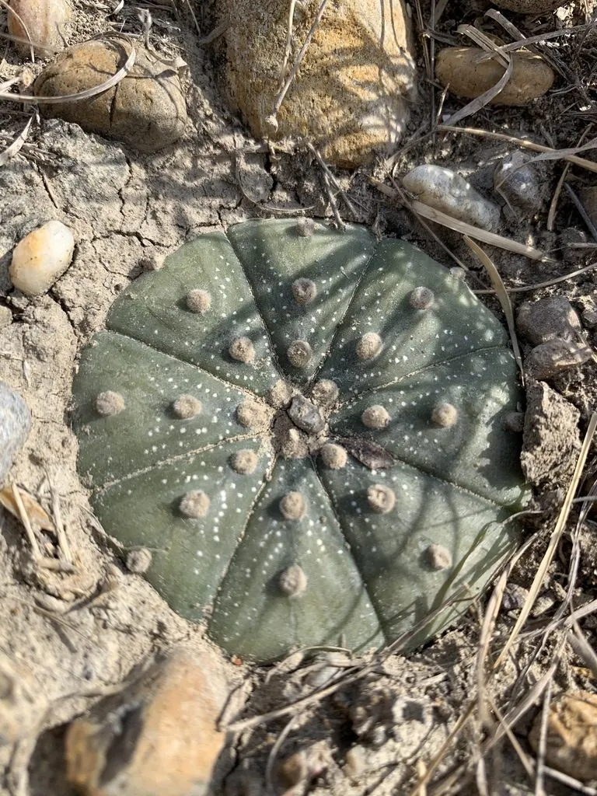

多肉植物 · 植物界
星球 Astrophytum asterias

仙人掌科星球属扁球状多肉，球体有八条棱、表面密布白色星点，形似海胆或星球，花黄色红心，原产墨西哥，野生濒危。
- 分类
- 门被子植物门纲木兰纲目石竹目科仙人掌科属星球属
- 栖息环境
- 墨西哥东北部与美国南部的干旱草原和砾石地
- 地理分布
- 原产墨西哥东北部及美国得克萨斯州南部
- 保护级别
- IUCN 易危（VU）；CITES 附录Ⅱ
物种志
星球为仙人掌科星球属的扁球形多肉植物，球体直径 5–10 厘米，高 2–3 厘米，表皮灰绿色，通常有 8 条低矮的棱，棱脊上排列着白色绒毛状小点，使球面呈现星点状斑纹。球体无明显刺，仅在刺座处有细小绒毛。花顶生，漏斗形，黄色，喉部红色，直径 3–4 厘米，花期夏季；果实为长圆形浆果。
星球原产墨西哥东北部与美国得克萨斯州南部的干旱草原，喜阳光充足、温暖干燥的环境，耐旱但怕积水和低温。它球体扁平、棱纹规整，形似海胆，是仙人球中的经典种类。栽培宜用排水良好的矿质土，生长期干透浇透，冬季控水并保持 8℃ 以上；繁殖以播种为主，嫁接可加快生长。由于野生植株被大量采挖，星球已被列入濒危野生动植物种国际贸易公约附录，购买时应注意来源。
形态与习性
- 球径直径 5–10 厘米，高 2–3 厘米
- 棱数通常 8 条，棱脊有白色星点
- 花期夏季，花黄色、喉部红色
- 光照喜充足阳光，夏季适当遮阴
- 水分耐旱，干透浇透，忌积水
- 土壤排水良好的矿质颗粒土
- 繁殖播种为主，嫁接可加速生长
- 耐寒冬季需保持 8℃ 以上
趣味知识
- 星球球体通常有 8 条棱，表面白点像星空，因此得名。
- 它几乎没有刺，靠球体上的白色绒毛状斑点反射阳光。
- 野生星球因长期被采挖而数量下降，已列入国际贸易公约附录。